Welcome! 
Rocket.Chat is a chat platform that enables you to connect with fellow entrepreneurs. It's useful for
- exchanging ideas
💡 - supporting each other in your business projects
💼 - and discussing topics of common interest
📱 📠📡 💊 📖 ğŸ 🚕 🚜 🳠👔 🍹
Never used Rocket.Chat before? Don’t worry! This tutorial will teach you how to use it.
Why learn to use Rocket.Chat? It's open source, free to use, and gaining traction. So it might be useful for communication among the team in the business that you're creating.
⏩ Key takeaways
-
Install and set up Rocket.Chat:
-
â¬‡ï¸ Download Rocket.Chat on your smartphone📱 or computer💻 - Enter the server name sent to you in an email
- Create a username and password
-
- Public channels are like a coffeeshop or a market: a public place to meet and discuss. Private groups are like a secret meeting with your closest advisors.
-
Create your own public channel about your business idea.
- Put
p-at the beginning of the channel name to mark it as a project. Give the channel a descriptive name such asp-urban-farm. -
📌 Pin your most important messages so that people can quickly understand your business project and help improve it.
- Put
- Find other projects and try to help them with their business ideas. They may thank you with a token that could win you a prize!
💸 - Reward entrepreneurs who have given the most useful comments on your business idea by giving them tokens.
- Create public channels for general topics that you want to discuss with others, such as
#appsand#agriculture. Announce the channel to everyone in#general. -
Mention other users by writing
@nameto notify them. Use emojis to enliven your messages.😃 ✨ 🉠- Confused about using Rocket.Chat?
😕 Ask for help in the channel#rocket-helpor look for answers in the official Rocket.Chat documentation.
Installing and setting up Rocket.Chat
-
â¬‡ï¸ Download Rocket.Chat on as many devices as you want (Android, iOS, Mac, Windows, Linux). - Open the app and enter the server name that we sent to you via email. The server name looks like
<server-name>.rocket.chat. Press CONNECT. - Create a username and password:
- Click on Register new account and fill in all the required information.
- We suggest that your username be your first name and last name separated by a dot. For example:
Barack.Obama. That way, people can easily find you. - When you are done, press SUBMIT, and you will see the homepage of the chat.
The video below illustrates steps 2 and 3:

Add a profile picture 👳 👵 👹
Add a profile picture so that others can associate a face (or a business logo) to your name:
- On the mobile app, tap on the three horizontal lines in the top-left corner to open the main menu.
- Tap on your username on the top.
- Tap on
My account. - Tap on
Avatar. - To upload a picture, click on
Select fileand choose a picture from your phone or computer.
If you don’t upload a photo, your default avatar will be your initials.
Understanding channels
Conversations in Rocket.Chat are organized into channels. Channels are chat rooms with many useful features. There are three kinds of channels:
-
Public channels are open spaces for discussion. Conversations in public channels are like those you have at a market or a city square. Everyone can
- see all public channels;
- preview the contents of all public channels;
- join any public channel (i.e., become a member of any channel).
-
Private Groups are closed channels. Only the members of a private group know that it exists and can see its contents. The person who creates a private group is the owner. The owner can
-
âœ‰ï¸ invite people to join the private group; and -
👢 kick people out of it.
-
Direct Messages are private, 1-on-1 conversations. Think of a Direct Message as a private group with only two members.
On the mobile app, swipe from left to right to see the list of channels appear on the left-hand side:


Each channel has a list of members
To see the members, tap on a channel in the list of channels to open it, and then tap on the icon on the right-hand side.
Discuss business ideas
Create a public channel for your business project
This channel lets you share your business ideas with fellow entrepreneurs and get feedback from them.
- Tap on the three horizontal bars to bring up the menu on the left.
- Click on the
 next to
next to CHANNELS. -
Choose a channel name that
- begins with
p-so that it is easy to identify channels dedicated to projects; - ends with a description of the project, with words separated by hyphens
-, or underscores_.
For example:
p-urban-farmorp-taxi_app. - begins with
- When you are done, press 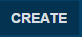.
Now your project channel is ready!
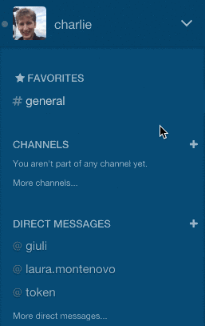
Announce your channel by writing a message in the public channel #general. Everyone is a member of #general. Refer to your project channel with a # at the beginning (such as #p-urban-farm) so that a link to your channel is automatically created.

By the way, use #general to send all kinds of announcements: about new channels you've created, ideas you want to discuss, or expertise you're searching for.
If you want to discuss a certain topic such as #apps or #internet-of-things, create a separate public channel for it. Announce your new channel in #general, and invite users by typing the command /invite @user in your channel. Keep off topic discussion in the channel called #random.
📌 Pinning messages
An important feature is pinning messages. We recommend that you pin the most important messages in your project channel, such as:
- summaries of your business proposal;
- questions that you have that others may help you with.
When people join your project channel, they can easily understand your project by reading the pinned messages without having to scroll through the entire message history
To pin a message:
click on the
 icon next to the message;
icon next to the message;click on the pin icon

Everyone can see the pinned messages of a channel by clicking on the  icon in the tool bar on the right.
icon in the tool bar on the right.
Making your project discussion private
We recommend that you keep your project channel public, at least for a while. Your ideas should reach as many fellow entrepreneurs as possible; otherwise you won’t get the chance to find valuable contributors!
After a while, you may want to continue discussion in a private group. To do so, you can either
-
create a new channel that is private by checking the box
PRIVATE GROUPwhen you create the channel;
or convert a public channel to a private group by opening the channel and then clicking on the
 icon.
icon.
Channel operations
Joining a channel
Now you are ready to start! You have a username, a channel and... a business idea to share and get feedback on from fellow entrepreneurs. And you can help others with their business ideas.
To browse existing channels:
- click on the
 button on the left-hand pane;
button on the left-hand pane; - click on the name of a channel to preview its discussion;
- if you find an interesting channel, join it by clicking on the
 button.
button.
âï¸ Favorite channels
All these channels may become difficult to handle: people like chatting, and channels may proliferate! To organize and prioritize your communications, we recommend you favorite (or star) channels, private groups, and DMs.
To favorite a channel, click on the star icon in the upper left hand corner of the message area (next to the room name):

Then the star becomes yellow:
Now the channel will appear under the list of Favorites in the left-hand:
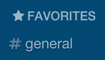
Starring helps you to focus on what's important to you.
Hiding and leaving channels
You may realize after joining a channel that you are no longer interested in it. Don't worry; it's never too late to leave a channel! There are two ways to exit:
- You can hide to remove it from your list of channels. You still remain a member of the channel.
-
💻 On the desktop app, hover your mouse over the channel in the list of channels on the left-hand side, and click on the button.
button. -
📱 On the mobile app, pull from the left-hand side to see the list of open channels, hold down on the channel name to bring up the buttons, and click on the button.
-
- You can leave a channel, which will remove it from your list of channels and remove you as a member of the channel.
-
💻 On the desktop app, hover your mouse over the channel in the list of channels on the left-hand side, and click on the button. -
📱 On the mobile app, enter the message/leaveor/partin the channel.
-
Messaging 📃
Type messages in the message box and press ⏎ (Enter) or the send button  . If you want to send multiple lines of text, press ⇧ ⏎ (Shift Enter) to move to the next line.
. If you want to send multiple lines of text, press ⇧ ⏎ (Shift Enter) to move to the next line.
Mention @someone to get their attention 👋
To get someone’s attention, type @ followed by their username, for example @Barack.Obama. (Rocket.Chat automatically completes someone's username as you type it.) Then your friend @Barack.Obama will see a red badge on the channel and will be notified via email or his mobile device.
To notify everyone in a channel, write @all. But remember, @all notifies everyone! It can be useful for important announcements. But it can be distracting if abused, so use @all sparingly.
Referring to previous messages 👆
To refer to a previous message in a conversation, you can grab a link to a certain message:
-
💻 On the desktop app, hover the mouse over a message, click on the gear icon, and click on the link  .
. -
📱 On the mobile app, press and hold on a message, click onPermalink.
This copies to your clipboard a link to that message. Paste that link into a new message to create a clickable link and a preview to the old message.
Say it with an emoji! 😁
To insert emoji in a message, hit the emoji button  to the right of the text input to open an emoji picker:
to the right of the text input to open an emoji picker:

You can also type your desired emoji by wrapping its name with :. For example, :heart: produces
Emoji reactions
You can also react to a message with an emoji.
-
On the desktop application: hover over a message, click on the gear icon
, click on the smiling face icon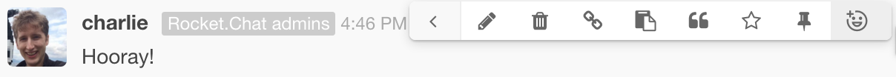
On the mobile application: press and hold your finger on a message to bring up a menu, press
Reactions
Then choose an emoji from the emoji picker, and the emoji appears below the message:
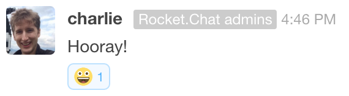
To remove an emoji reaction, click on the emoji below the message. To reiterate an existing emoji reaction that someone else posted, click on that emoji to add to that emoji's counter.
Tokens
Discussing your business ideas with others can improve them.
Giving a token to someone is a way to say
Thank you! You have really helped me with my business plan. Let's keep interacting!
At the end of the contest, venture capitalists and other investors will evaluate business plans. They will also decide which ones they want to fund.
If you hold a token given by someone whose business plan was highly rated by the investors, then that token is a lottery ticket
-
âœˆï¸ ğŸ« ğŸ’¼ 🌇 The prize is an all-expenses-paid trip to Milan🇮🇹 for a business training course at the Business School of Bocconi University, one of the best business schools in Europe. The cost of this intensive course, lodging, and travel will be fully covered. There may also be an opportunity to pitch to investors in Milan. - The more you help others with their projects, the more tokens you will be given, and the more chances you have at winning this prize.
Giving tokens
Everyone begins with only 5 tokens, so give them wisely.
To transfer tokens, we have created a "bot" named @token. This bot is a robot @token in a direct message or in any public channel.
To give a token to @someone, send the message /give @someone in any public channel or in a direct message to @token:

The bot @token responds by confirming that you successfully gave a token to that user, and @token tells you how many tokens you have left to give.
To thank someone for significantly helping your business plan, you can give them multiple tokens. You can do so using multiple /give @someone commands. Or you can send multiple tokens all at once by writing /give 3 @someone or /give all @someone:

Revoking tokens
Did you regret giving a token to someone? You can revoke it with the command /revoke @someone:

You can also revoke more than one token by writing /revoke 2 @someone.
Who has the most tokens?
To find out who currently has the most tokens (given to them by other people), send the message /leaderboard in a public channel or in a direct message with the @token bot. Then the @token bot responds to you in a direct message with the ranking:
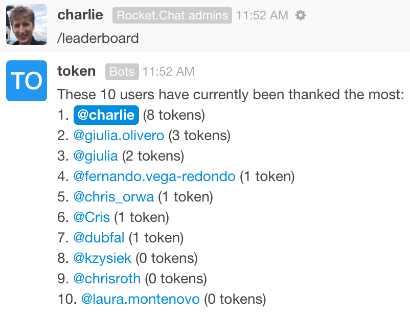
Status of my tokens
If you don't remember how many tokens you have, send the message /status in a public channel or in a direct message to the @token bot. Then the bot sends you a direct message that summarizes the tokens you have left to give, have given, and have received:

Learn more about interacting with the @token bot
More details on how to send, receive, and check the status of tokens is available in this token-bot user guide.
Advanced topics
🔠Search messages
Rocket.Chat allows you to search within channels for messages that you want to see again. To do so, just click on the search icon 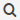 in the vertical toolbar on the right. In the search bar, type one or more keywords included in the chat message that you want to find.
Set the topic of a channel
In addition to
- choosing a descriptive name for your project's channel and
- pinning important messages that summarize your project
you can help users understand your project by setting a topic for your project channel. A topic is a small amount of text that appears in small, gray font next to your channel name:

Keep the topic short because not much can fit next to the channel name. To assign a topic to your channel, you can either
- write the command
/topic growing vegetables on rooftops; - or click on the information icon and click on the pencil button
 under Topic.
under Topic.
✏️ Editing messages
You can edit a message in Rocket.Chat after you have sent it.
-
📱 On the mobile app, press and hold on a message to bring up the menu, and click onEdit. -
💻 On the desktop app, click on the gear icon next to the message, and then click on the pencil icon . Alternatively, hit the Up Arrow in the message input box.
Then the message box has a yellow background, meaning that you can edit the message. Then hit the send button  . Now appears next to that message.
. Now appears next to that message.
You can also delete a message:
-
📱 On the mobile app, press and hold on a message to bring up the menu, and click onDelete. -
💻 On the desktop app, click on the gear icon next to the message, and then click on the trash icon  .
.
Another way to delete a message is to edit the message to have no content.
Online, Away, Busy, and Invisible
At the top of the main menu, you see your username. If you click on it, then you can change your status between Online, Away, Busy, and Invisible:
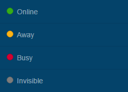
If you choose "Invisible", then others will think that you are not online. But we don't recommend you be an invisible ghost
Passwords and logging in
😟 Help, I can't log in to Rocket.Chat!
There are a few common reasons for being unable to log in:
-
Forgotten password: If you are unable to log into Rocket.Chat, first try resetting your password. The login screen has a button Forgot your password .
- Updating files takes a long time. Rocket.Chat is being improved every week, so the app periodically asks you to update the software. If it takes a long time to update files, try quitting the app and opening it again. You could try skipping the update and wait to update the app until you are connected to wifi.
-
Wrong server: You may be trying to log into the wrong server. A Rocket.Chat server looks like
server-name.rocket.chat, whereserver-nameis replaced by the name of your server. (A Rocket.Chat server may also havehttps://in the beginning.) Your server name was sent to you in an email. The next section explains how to change the server you are trying to log into.
If you are still having trouble logging in, send an email to Charlie.
Switching servers
If you belong to multiple servers on Rocket.Chat (such as demo.rocket.chat and one for the Adansonia Project), you can easily switch among them.
-
💻 On the desktop app, the servers are listed on the far left-hand side. You can switch between servers by pressing ⌘ Command followed by a number.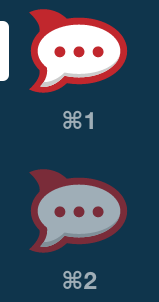
-
📱 On the mobile app, at the login screen where you enter your user name and password, swipe up with two fingers to bring up a screen at which you select the server: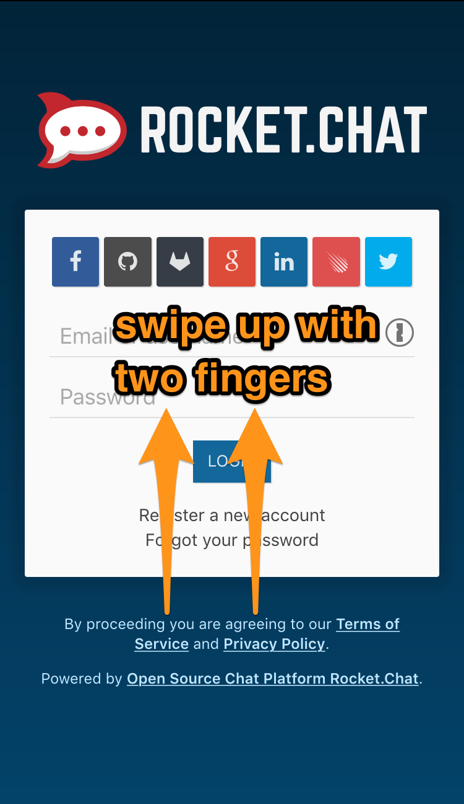 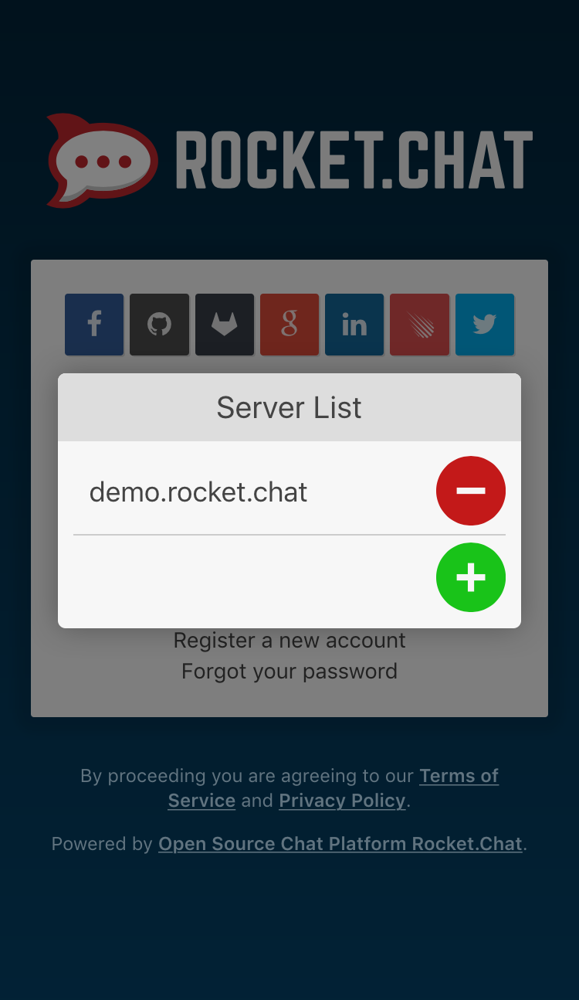
🔒 Change your password
If you ever want to change your password, do the following:
- Open the main menu.
-
📱 On the mobile app, tap on the three horizontal lines in the top-left corner to open the main menu -
💻 On the desktop app, make sure the window is large enough to see the list of channels on the left side; otherwise, click on the three horizontal lines in the top-left corner.
-
- Click on your username
- Click on
My account - Click on
Profile